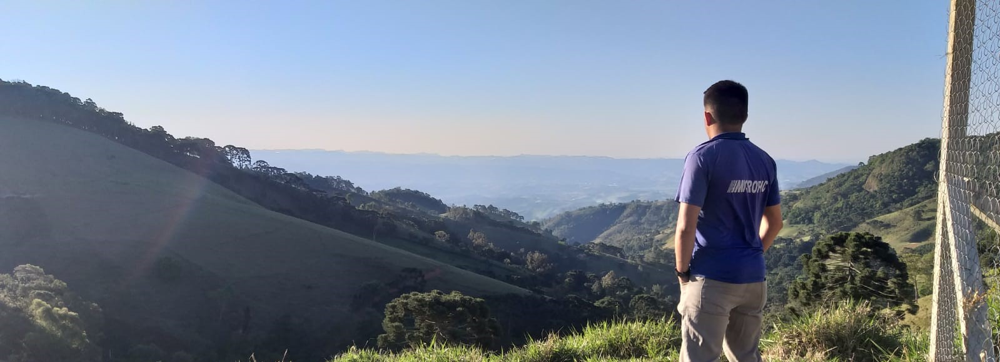

16 de Maio de 2023
Jornada do Zero à Primeira Vaga

Iniciei minha carreira na tecnologia como técnico em informatica na Micropic um provedor de internet da região
do sul de minas.
Onde exercia a função de dar suporte aos clientes residências e empresariais. Foi o local que me ingressou no
mercado de trabalho
me mostrando pontos que precisaria melhorar para que conseguisse evoluir profissionalmente. Na Micropic também
foi o local que me
direcionou a fazer um curso superior na area de redes de computadores, devido o meu trabalho exigir
conhecimentos mais aprofundados nesse ramo
para que eu pudesse melhorar o meu suporte e sanar as minhas dúvidas e as dos clientes que eu atendia,
garantindo
assim uma maior confiança no meu trabalho.
Acredito que esse foi o ponta pé inicial para partir sempre mais em busca de conhecimentos, pois notei que isso
muda o dia a dia de trabalho e te faz
realmente ser um profissional importante para a empresa. Nesse sentido pude ter várias experiências e aprendi
muitas coisas como gerenciar uma rede wifi
com qualidade, configurar equipamentos de redes como Acess point, Routers, antenas de rádio, switchs, ONUs
fiberhome dentre outros. Aprendi também
fundamentos de TCP IP, DNS, Proxy, Dhcp, Vlan, Wan, Lan, cabeamento estruturado, e etc. Mais após 5 anos de
trabalho
recebi uma proposta de partir rumo a um novo desafio
o qual só foi possível devido á um atendimento rotineiro de suporte que realizei no grupo ABR empresa do ramo de
aço que pude estar auxiliando naquele dia
assim sendo convidado pelo gestor do local a trabalhar na equipe de TI desse grupo alguns dias depois.